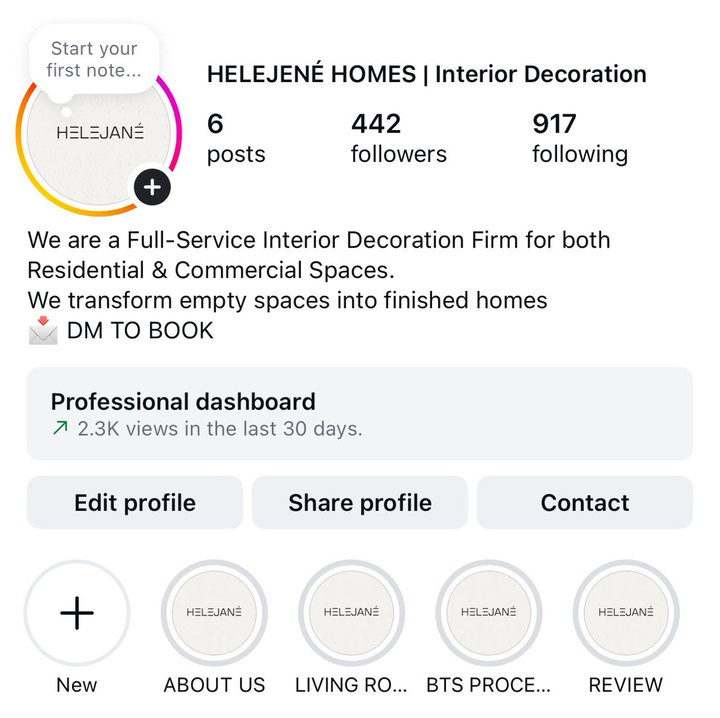
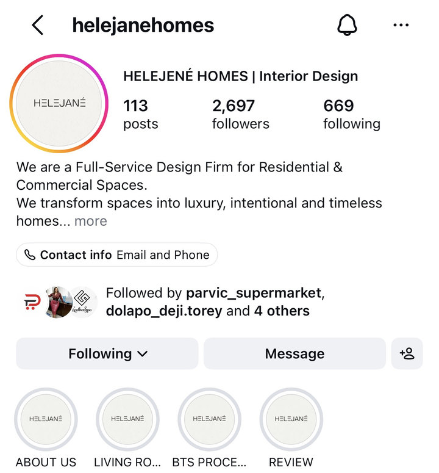
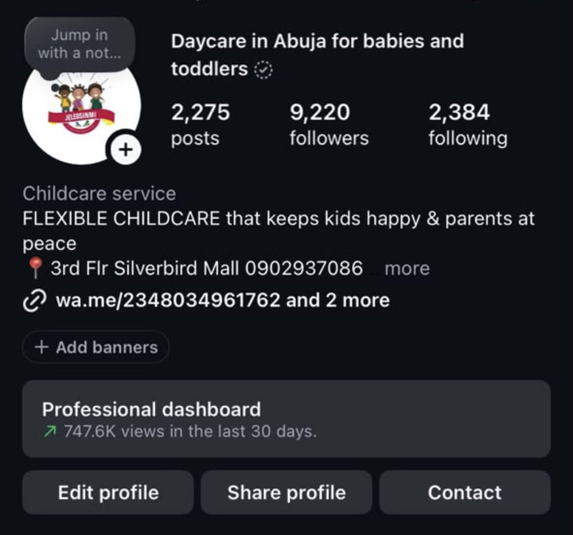
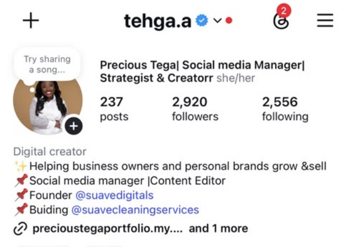
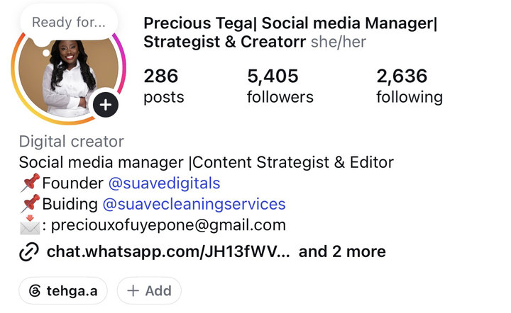

Helejené Homes



THE COMPLETE SOCIAL MEDIA MANAGEMENT BLUEPRINT
Build Your Skills. Create Content That Works. Start Landing Clients.
You don’t have to spend months trying to figure out social media management from random tutorials.
The Complete Social Media Management Blueprint is a practical course designed to help you understand the real job of a social media manager, develop essential content skills, grow social media pages, analyse performance, build a portfolio, and learn how to land clients.
Whether you’re starting from scratch or you’re already managing accounts and want to improve your skills, this course will give you a structured path to follow.
Learn the work. Practise the skills. Position yourself for opportunities.
Course access + practical templates + two weeks of mentorship + community access.
01 / PAGE GROWTH
I want you to learn from practical examples, not just listen to me talk about what is possible.
Over time, I’ve worked on social media accounts, developed content, tested different approaches, and seen what happens when the right strategies are put into practice.
And I have proof of that work.
I want you to understand how to approach page growth with a strategy, rather than simply posting and hoping the numbers increase.



Precious Tega’s own Instagram page


Growing a page is one thing. Creating content that attracts attention, reaches people, and gets them to engage is another.
I’ve also worked on content that performed exceptionally well, and I want to use practical examples to help you understand the importance of hooks, content structure, audience interests, and learning from performance.
These examples will help you see that content creation isn’t just about making something look good. It’s also about understanding what makes people stop, pay attention, and take action.
I want you to see the kind of work I do, not simply take my word for it.
02 / THE BLUEPRINT
Maybe you’ve been wanting to become a social media manager, but you don’t know where to start.
You’ve watched videos, saved tutorials, and tried to learn from different people. One person tells you to focus on content creation. Another says you need to understand strategy. Someone else is talking about finding clients.
And you’re left wondering: Where am I even supposed to begin?
Or perhaps you’re already an SMM.
You can create graphics, edit videos, and write captions. But your clients keep letting you go after one or two months cause they can’t see any results; you want to understand how to build a proper content strategy that works, grow the pages you manage, analyse your results, and confidently show potential clients what you’re capable of.
You don’t just need more information. You need to know how to put the pieces together.
That’s why I created The Complete Social Media Management Blueprint: to help you understand the job, learn the practical skills, and approach social media management with more confidence and intention and make more money from this skill
03 / THE COURSE
Inside The Complete Social Media Management Blueprint, you’ll work through 11 core lessons covering the practical skills and processes you need to understand as a social media manager.
Understand the responsibilities of an SMM, what clients expect, the skills you need, and what managing a brand’s social media presence actually involves.
Learn how to understand a brand’s audience, identify their pain points, develop content pillars, generate relevant ideas, and create content with a clear purpose.
Learn how to organise content, plan ahead, and create a practical content calendar that helps you execute a strategy consistently.
Learn how to write stronger hooks, understand how platforms distribute content, and apply practices that can improve content performance, including retention, relevance, and engagement.
Understand how to turn ideas into useful, engaging content that aligns with a brand’s audience, goals, and identity.
Learn practical video-editing techniques for short-form social media content, including pacing, text overlays, captions, and creating a more engaging viewing experience.
Learn how to create social media graphics, work with layouts and templates, and produce clean, professional designs that fit a brand’s identity.
Understand practical approaches to page growth, discoverability, audience engagement, content experimentation, and improving your growth efforts.
Learn how to review account performance, identify top- and low-performing content, interpret important metrics, and use your findings to plan what to improve next.
Explore practical approaches to finding potential clients, positioning your services, reaching out, starting conversations, and pursuing opportunities.
Learn how to present your work, demonstrate your skills, prepare a compelling portfolio, and approach social media management interviews with greater confidence.
04 / YOUR INSTRUCTOR
Social Media Manager. Content Strategist. Founder of Suave Digitals.
I’ve spent the past 5 years working with brands, developing content, managing social media accounts, and learning what it takes to do this work professionally.
I’ve worked on page growth, content performance, strategy, and the practical responsibilities that come with managing social media for businesses.
I’ve also had to learn how to present my work, develop my skills, and navigate the business side of social media management.
I created this course to share the practical knowledge I’ve developed and help aspiring and existing social media managers understand the work more clearly.
My goal is to help you build skills you can actually apply — from planning content and creating social media assets to analysing results and preparing to approach potential clients.
05 / THE COURSE
This course is for you if:
You don’t need to have everything figured out before you start.
What matters is your willingness to learn, practise, and implement.
I don’t want you to finish the course understanding the concepts but still feel stuck when it’s time to put them into practice.
That’s why your enrolment also includes these resources.
Use this template to gather the information you need from a new client, understand their business, clarify their goals, and get the working relationship started professionally.
Use this template to organise your thinking and structure a social media strategy for a brand, instead of starting from a blank page every time.
Plan content in an organised, practical format that helps you keep track of ideas, post formats, publishing dates, captions, and other relevant details.
These templates are designed to help you apply what you’re learning and make your workflow more organised.
Getting access to a course is one thing. Knowing where to turn when you have questions is another.
I want you to have an opportunity to ask questions and get guidance as you begin applying what you’ve learned.
After taking the course, you’ll receive access to a two-week mentorship period where you can ask questions and get guidance as you work through the material.
You’ll have an opportunity to clarify things you don’t understand and seek direction as you practise.
After the two-week mentorship period, you’ll be added to the Social Media Management Community.
You’ll be able to connect with other social media managers, learn from their experiences, ask questions within the community, share ideas, and continue learning alongside people who understand the work you’re doing.
You’re not just learning a skill in isolation. You’re joining a space where you can continue developing.
Once you complete the course and meet the stated completion requirements, you’ll receive a certificate of completion under Suave Digitals.
Use it as a record of completing the programme and as an additional item in your professional development journey.
Your portfolio, practical skills, and ability to demonstrate what you can do remain important when approaching clients and employers.